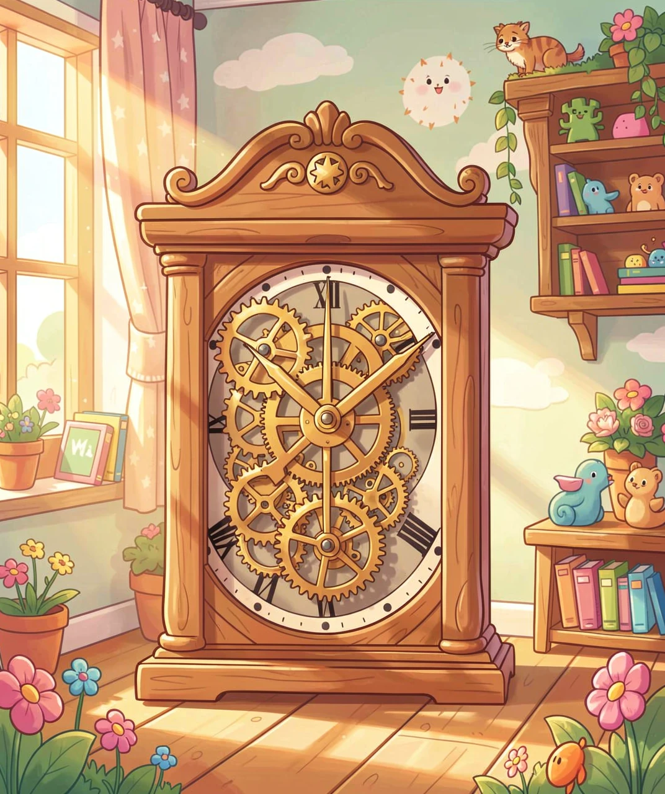
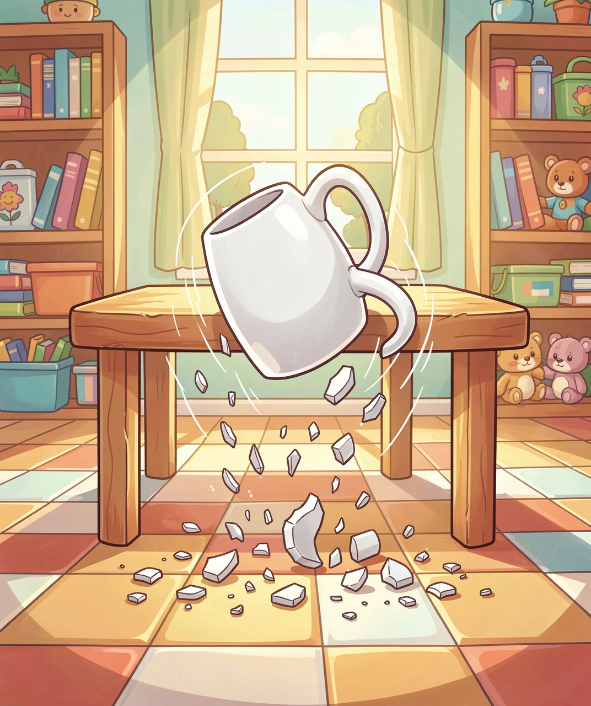
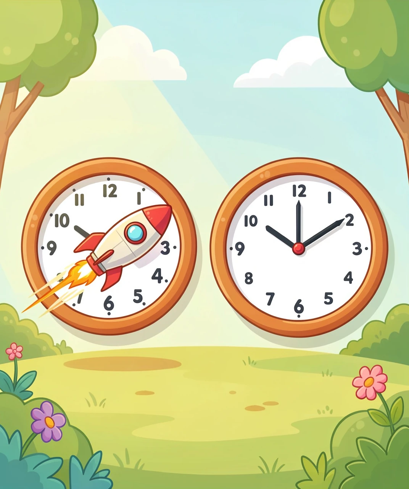
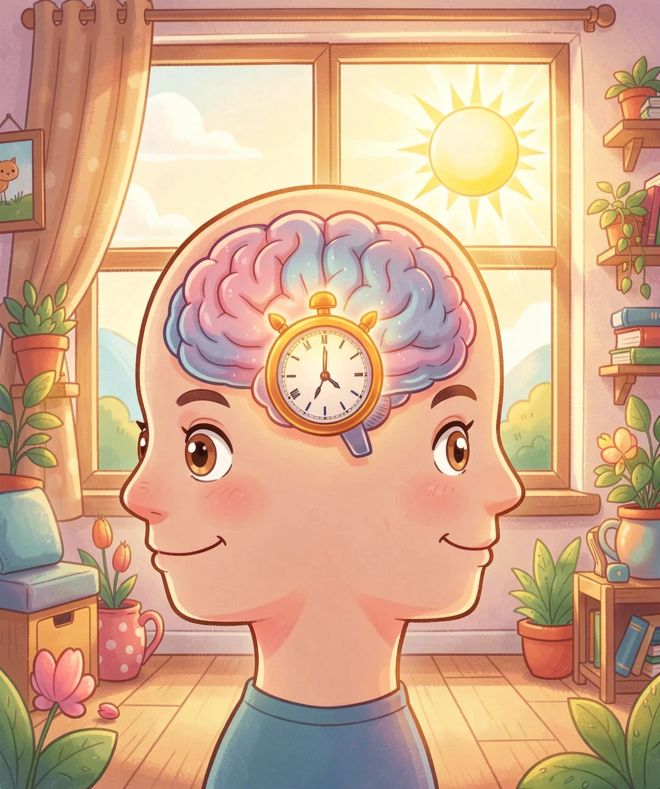
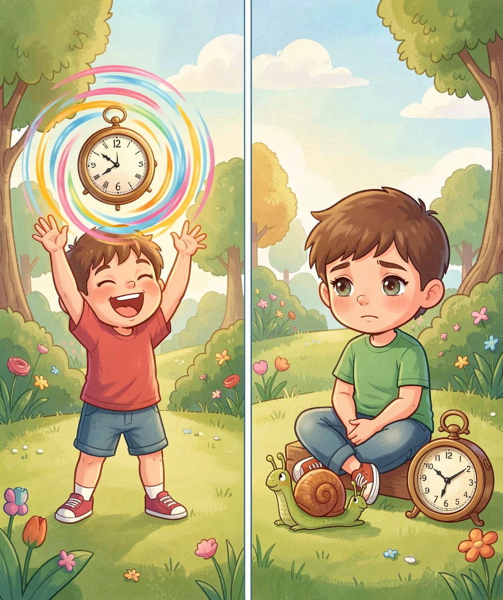

一个看得见它在走、却怎么都摸不着的东西
先做个思想实验：如果世界上一切都不变——不动、不老、不冷也不热，你能感觉到时间在流逝吗？答案是不能。你根本没法发现时间，因为时间从不自己"露脸"。
那我们是怎么知道时间在走的？追到最底层：我们是靠"变化"来发现时间的。天亮天黑、树叶变黄、钟摆来回摆——只要能找到一种很有规律、不停重复的变化，我们就能拿它当尺子，去量其他所有变化。钟摆每摆一下算一格，地球每转一圈算一天，原子每振动 91 亿次算一秒。
所以钟表其实不是"时间本身"，它只是一台制造规律变化的机器。我们真正在比的，是"这个变化快"还是"那个变化慢"。换句话说：时间，更像是一切变化的顺序和间隔，而不是一个独立存在的"东西"。

杯子掉在地上会摔碎，但碎杯子永远不会自己拼回原样。牛奶滴进水里会散开，但散了就再也回不到那滴牛奶。为什么时间只能往前走，不能倒着来？
答案藏在"整齐"和"混乱"哪一种更容易出现里。想象你房间里有 3 件东西。把它们摆得整整齐齐，大概只有一种摆法；但把它们随便乱扔，却有无数种摆法。如果每件东西都随机乱动，落到"乱"的样子，机会要大得多得多。不是"乱"更有力气，而是"乱"的摆法数量压倒性地多。
科学家把"乱的程度"叫做熵。宇宙有个大趋势：熵总是倾向于增加——也就是从整齐走向混乱。摔碎的杯子、散开的牛奶、化掉的冰，都是熵在增加。而"时间的方向"，恰恰就是由熵增加的方向决定的：能倒放的、让熵减少的过程，几乎不可能自己发生。
这也解释了一个很妙的事：为什么我们记得过去，却不记得未来？因为记忆本身就是把"有序的信息"存下来——它跟着熵增加的方向走，所以我们只能记住"已经发生过的混乱"，记不住还没发生的。

你可能会想："一天就是一天，全世界不都一样吗？"一百多年前，爱因斯坦却提出了一个惊人的答案：不一样。运动越快，时间走得越慢；引力越强，时间也走得越慢。
为什么？追到最根本的一条规律：科学家发现，不管你是站着还是坐着飞船，光速对你来说永远是同一个数。可如果光速必须保持不变，那么当两个人相对运动时，能变的就只剩时间和空间本身了——时间会被"拉长"，空间会被"压扁"。这不是猜想，是被无数实验验证过的事实。
怎么证明？最生活化的例子就在你手机里：GPS 卫星。卫星飞得很快（时间走得慢），又离地很高（引力弱、时间走得快），两边一抵消，它每天和地面差出大约百万分之三十八秒。这看着微不足道，可如果不修正，导航每天会偏出十来公里——你的地图早就把你导进河里了。
所以时间的"快慢"不是绝对的，它是相对的：每个人的时间，取决于他跑多快、待在多强的引力里。

时间不只在天上，也在你身体里。你有没有发现，到了晚上就犯困，早上到点会自己醒？这不是你"记性好"，而是身体里有一只生物钟。
为什么会有它？追到源头：地球自转造就了白天和黑夜的循环。生命为了活下去，光"被动地反应"不够，还得提前预测——天快黑了，就先把身体调成休息模式；天快亮了，就提前准备醒来。会预测的生物，比只会反应的生物活得好。于是经过漫长进化，几乎所有生物体内都装上了一只大约 24 小时的钟。
这只钟住在你大脑里一个叫视交叉上核的小地方，它靠光来校准：每天早晨的阳光进来，告诉它"现在是白天"，它就重新对表。晚上光线变暗，身体分泌褪黑素，你就困了。
那为什么坐飞机跨时区会难受（倒时差）？因为你的生物钟还停在出发地的"老时间"，而当地已经是白天。它需要好几天，靠当地的光线才能慢慢调过来——这就是为什么倒时差那么累。

最后一个谜题：明明钟表上过了一小时，为什么玩游戏时"嗖"地就没了，而干等的时候却像过了一整天？时间难道还能"变快变慢"？
关键在大脑怎么估算时间。追到它的底层规则：大脑很大程度上是靠"记下了多少新东西"来判断过了多久的。玩游戏时，新画面、新挑战一个接一个，脑子记下了大量"新记忆"，回头一看——"信息这么多，肯定过了很久"，可实际上时间飞快溜走了。无聊发呆时啥新事都没有，记忆几乎是空的，反而觉得"怎么才过这么一会儿"？
这也解释了另一个现象：为什么小时候的日子感觉特别长？因为那几年你全在经历"第一次"——第一次上学、第一次骑车、第一次看见海。新鲜事多，记忆就满，回忆起来就觉得那段时间好长好长。长大后日子越来越雷同，记忆变少，时间也就"显得"越来越快。
还有个冷知识：你感受到的"此刻"，其实是稍微过去了一点点的世界。因为眼睛看到、传到大脑、大脑处理完，都要花时间（大约十分之一秒），所以你一直活在一个刚刚过去的瞬间里。
